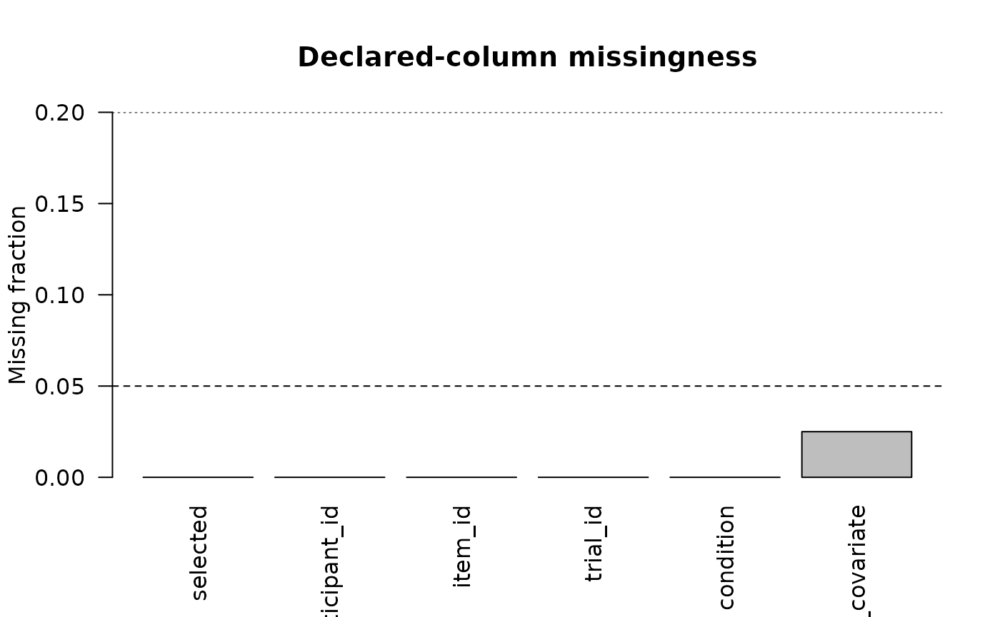
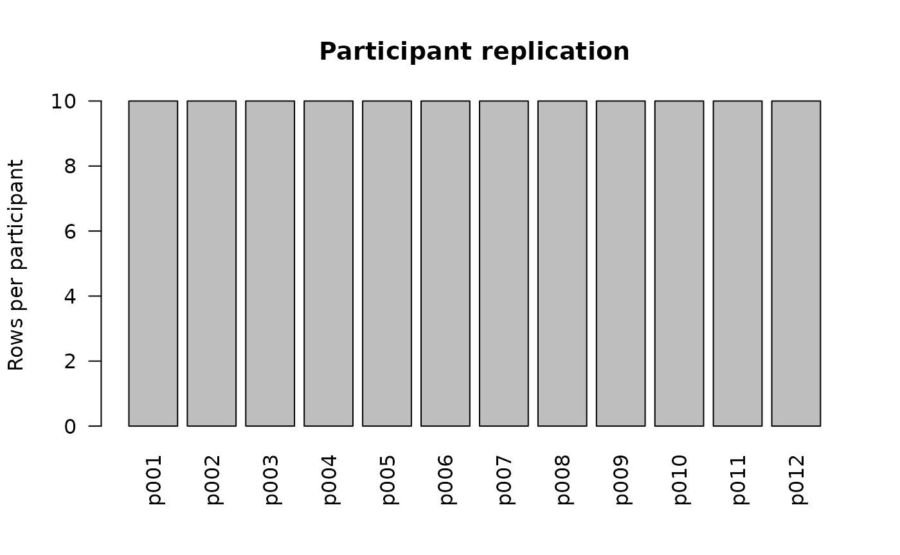
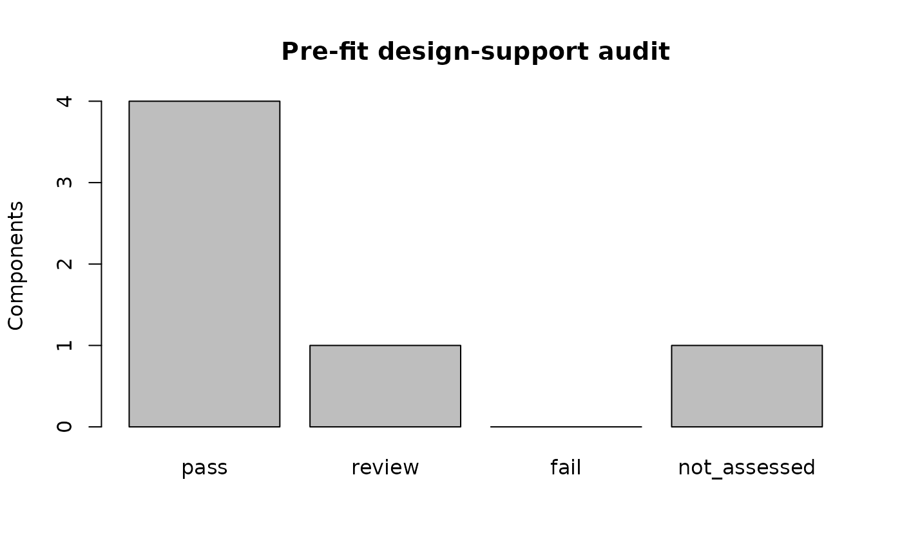

Pre-fit Design-Support Diagnostics
Source:vignettes/pre-fit-design-diagnostics.Rmd
pre-fit-design-diagnostics.RmdDiagnose the design before invoking Stan
Many modeling failures can be identified from the declared design itself. Version 0.2.0 adds four reporting audits that run before MCMC:
-
audit_missingness_structure(); -
audit_fixed_effect_design(); -
audit_random_effects_support(); and -
audit_design_support().
They do not impute, exclude, drop predictors, or simplify random effects.
simulation <- simulate_hierarchical_binary_data(
n_participants = 12,
trials_per_participant = 10,
n_items = 6,
random_slope_sd = 0,
seed = 11
)
contract <- create_model_contract(
family = "binary",
outcome_col = "selected",
participant_col = "participant_id",
item_col = "item_id",
trial_col = "trial_id",
condition_col = "condition",
predictors = "trial_covariate"
)Missingness is described, not repaired
with_missing <- simulation$data
with_missing$trial_covariate[c(3, 17, 41)] <- NA_real_
missingness <- audit_missingness_structure(
with_missing,
contract
)
missingness
#> <gp3bayes_missingness_audit>
#> Status: pass
#> Rows: 120
#> Missing cells: 3
plot(missingness)
Fixed-effect geometry
The fixed-effects audit reports design-matrix rank, singular values, a condition-number screen, invariant columns, and leverage. These quantities are warning signals about the declared numerical design; they do not determine a scientifically preferred model.
fixed_design <- audit_fixed_effect_design(
simulation$data,
contract
)
fixed_design
#> <gp3bayes_fixed_effect_design_audit>
#> Status: review
#> Rank: 3/3
#> Condition number: 2.6181
#> High-leverage rows: 3
plot(fixed_design)Repetition, crossing and random slopes
random_support <- audit_random_effects_support(
simulation$data,
contract
)
random_support
#> <gp3bayes_random_effects_support_audit>
#> Status: pass
#> component status
#> participant_repetition pass
#> item_crossing pass
#> random_slope_support pass
plot(random_support)
One combined preflight
design <- audit_design_support(
simulation$data,
contract,
separation = FALSE,
strict_readiness = TRUE
)
design
#> <gp3bayes_design_support_audit>
#> Status: review
#> component status
#> standard_readiness pass
#> strict_readiness pass
#> missingness pass
#> fixed_effect_design review
#> random_effects_support pass
#> separation not_assessed
#> Automatic model changes: FALSE
plot(design)
For binary models, a fixed-effects separation screen can also be
requested when detectseparation is installed:
audit_design_support(
simulation$data,
contract,
separation = TRUE
)A review or fail flag is a prompt for
methodological inspection. It is not an automatic instruction to remove
data or alter the prespecified model.